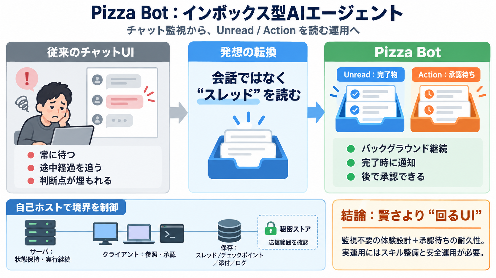

AWS open-sources Pizza Bot: email-style inbox for...
Pizza Bot is an open-source, email-style inbox application released by contributors formerly at AWS for managing AI agen…

AIエージェントの作業を“常時監視不要”にするために、完了物や承認待ちをインボックス（スレッド）として返す自己ホスト型アプリです。
チャットUIは「ユーザーも同じ時間帯に対話へ参加する」前提のため、調査・下書き・複数ツール連携・承認待ちが増えると破綻しやすいです。
Pizza Botは、このギャップを「読むための単位」に置き換えることで埋めます。〈日本語〉インボックス型UI（Inbox UI）
“会話”ではなく“履歴（スレッド）を読む”ことを中心に据え、完了は未読、判断が要る部分はアクション待ちとして積み上げます。
チャット型の「リアルタイム同期」を要求せず、必要なタイミングだけユーザーが介入します。
サーバが状態を保持し、クライアント（ブラウザ/デスクトップ/ターミナル）は参照と承認を担います。再接続や別デバイスでもタスクを継続可能です。
ページ更新しても追い直せる設計が、現場運用で効きます。〈日本語〉復元性（復旧性）
エージェントは「タスク実行」と「意思決定（承認待ち）」を分け、承認が必要な局面だけActionキューへ切り出します。
この“承認待ちの耐久性（durable）”が、監視不要を支えます。
スキル（専門家）とMCPサーバを組み合わせ、使えるツール範囲を専門家単位で限定し、必要に応じて承認付き実行にもできます。
暴走リスクや誤操作の抑制につながるのが、アクセス可能性（reachability）を絞る設計です。
Pizza Botは自己ホストを前提に、テレメトリなし・モデル/到達先はユーザーが制御・資格情報は秘密ストアで扱う方針を強調します。
重要なのは「どこへ何が送られるか」を設計として理解し、許容できる構成にすることです。
Pizza Botは「会話中の待ち」をやめ、「読むためのキュー」として完了と判断点を分離します。結果として、バックグラウンド実行の価値がUIに反映されます。
〈日本語〉耐久的（durable）＝しばらく時間をおいても応答できること。
LangGraphによるチェックポイント化で、スレッド・チェックポイント・添付・ログなどをユーザー管理フォルダに保存する設計です。
Pizza Botにはファイル操作、サンドボックスJavaScript、タスク委譲、承認付きツール実行、cronスケジュール、シークレット保護Webhookなどが用意されています。
〈日本語〉仕事の道具として必要な“段取り”を、UIと分離して扱えるようにしています。
コミュニティプロジェクトのため、稼働・バックアップ・更新・安全運用は利用者側の責任になります。また、MCPサーバやスキルの“信頼”評価も運用負荷になります。
導入前にSECURITY.mdやEXTENDING.md、実行環境の評価が必要です。
Pizza Botは「バックグラウンドエージェントを業務UIとして成立させる枠組み」を提供します。鍵は、インボックス（Unread/Action）と自己ホストによる境界理解です。
Pizza Bot is an open-source, email-style inbox application released by contributors formerly at AWS for managing AI agen…
This article introduces AWS's open-source Pizza Bot, an application providing an email-style inbox for managing long-run…
This repository was archived by the owner on Aug 17, 2026. It is now read-only. microsoft / ignite25-LAB571-build-a-…
First, filter by primary task: coding, data workflows, automation, content operations, or support. Then compare installa…
### Topics agenticagiaiai-gentsai-promptsai-toolsalpacaawesome-listdeep-learningdeepseekgptharnessllamallmmachine-learn…